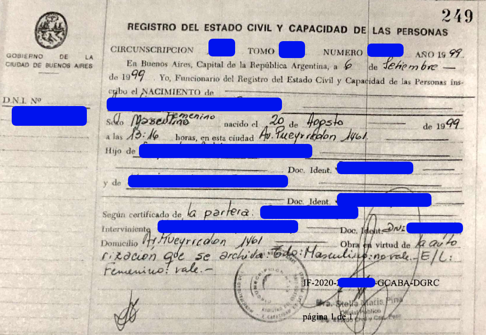

Templates de traducciones de actas de CABA al italiano
Traducción de acta de nacimiento de 1999 con timbrado y GEDO
Volver al inicio

TRADUZIONE.
[Vi è legalizzazione d’uso di questo atto munita
di firma digitale e codice di verifica online]:
Governo della Città di Buenos Aires.
2020.
Certificato di Atto pagato.
Numero:
CE-2020-20000000-GCABA-DGRC.
Buenos Aires,
mercoledì 23 settembre 2020.
Oggetto: Certificato di Atto consegnato.
Certifico che il presente documento è copia
conforme all’originale che risulta nel modulo
Ufficio dello Stato Civile Elettronico, del
Sistema di Gestione dei Documenti Elettronici del
Governo della Città di Buenos Aires alla data di
rilascio del presente certificato. Si rilascia per
essere presentato innanzi a chi corrisponde.
Si attesta che è stato effettuato il pagamento
relativo al rilascio di questo atto.
Numero di Documento Elettronico:
IF-2020-20000000-
GCABA-DGRC.
Verifica online: https://www.buenosaires.gob.ar/portal-autenticidad
[C’è una dicitura in un’altra lingua e firma
digitale di]
Gonzalo Alvarez, Direttore Operativo,
Direzione Generale dell’Ufficio dello Stato
Civile, Ministero del Governo.
[A margine sinistro] Governo della Città di Buenos
Aires. Carta d’identità (D.N.I.) N°
42.000.000
Ufficio dello Stato Civile.- Circoscrizione
13.
Volume
1A. Numero
2000. Anno
1999.
In Buenos Aires, Capitale della Repubblica
Argentina, addì
6 settembre 1999. Io, Ufficiale
dello Stato Civile, iscrivo la NASCITA di:
Sofía FERRARI
Di sesso femminile,
nata il
20 agosto 1999, alle
ore
13:16, in questa città in
C.so Pueyrredon
1461.
Figlia di
Luis FERRARI, carta
d’identità (D.N.I.) n.
18.000.000, e di
Juana RICCI, carta d’identità (D.N.I.) n.
23.000.000. Conforme al certificato dell’ostetrica
Sara Perez.
Dichiarante:
Marta GONZALEZ,
carta d’identità (D.N.I.) n.
10.000.000, residente
in
C.so Pueyrredon 1461. Agisce in virtù
dell’autorizzazione che si archivia.
Cancellato:
“maschile” non è valido. Tra linee: “femminile” è
valido.
[Seguono due firme, il timbro dell’Ufficio dello
Stato Civile e il timbro dell’Ufficiale Pubblico].
IF-2020-20000000-GCABA-DGRC. Pagina 1 di 1.
[Segue legalizzazione d’uso di questo atto munita
di firma digitale]:
Governo della Città di Buenos Aires.
2020.
Foglio aggiuntivo di firme.
Atto firma olografa.
Numero:
IF-2020-20000000-GCABA-DGRC.
Buenos Aires,
mercoledì 23 settembre 2020.
Oggetto: Atto digitalizzazione.
Il documento è stato prelevato dal sistema GEDO in
un numero complessivo di 1 pagina.
[C’è una dicitura in un’altra lingua e firma
digitale di]
Gonzalo Alvarez, Direttore Operativo,
Direzione Generale dell’Ufficio dello Stato
Civile, Ministero del Governo.
Aclaraciones y tips
-
Lo marcado en rojo debe adaptarse con atención según el caso.
-
En caso de tratarse del nacimiento de una mujer, nato debe cambiarse a nata, y
Figlio debe cambiarse a Figlia.
- Los meses del año en italiano son: Gennaio, Febbraio, Marzo, Aprile,
Maggio, Giugno, Luglio, Agosto, Settembre, Ottobre, Novembre, Dicembre.
- Los días de la semana en italiano son:
Lunedì, Martedì, Mercoledì, Giovedì, Venerdì, Sabato, Domenica.